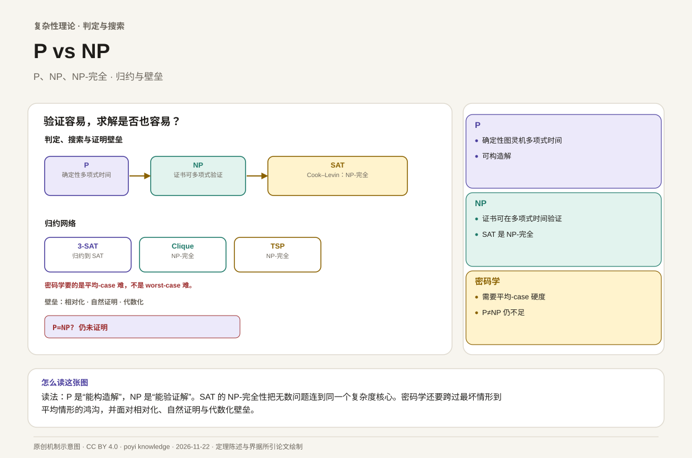
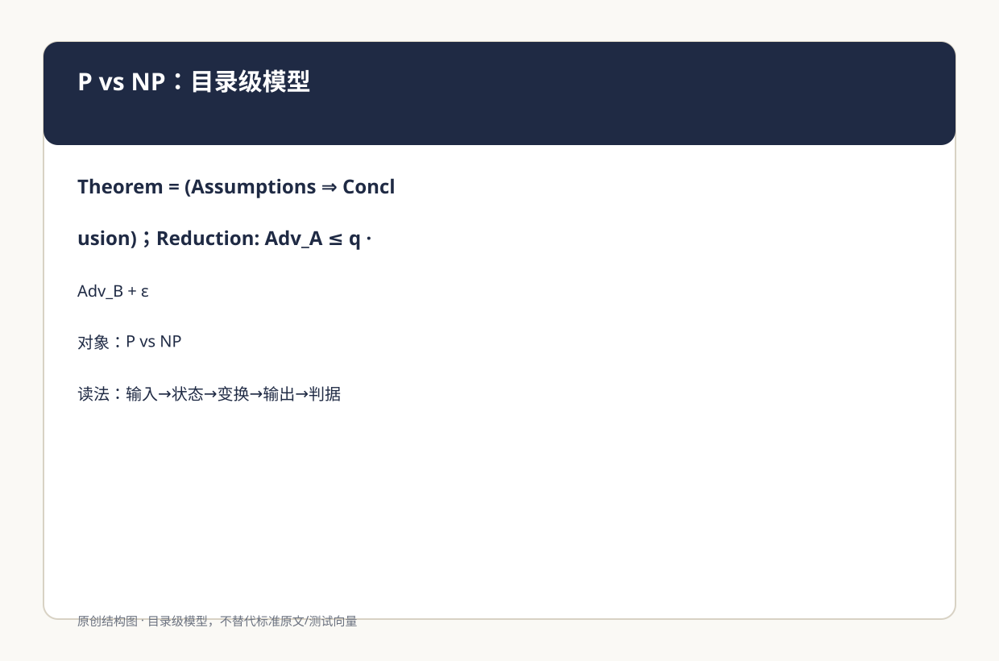

原理与机制
定理：P vs NP（P vs NP）。### P 与 NP
P 是确定型图灵机在多项式时间内可判定的语言类；NP 是存在多项式长度证书、且证书可在多项式时间内验证的语言类。判定问题问“是否存在解”，搜索问题问“给出一个解”。对 NP 语言，搜索可以逐位构造证书，但每次判定仍要调用 NP 判定器。### NP-完全与归约
Cook 与 Levin 证明布尔可满足性 SAT 是 NP-完全的：任何 NP 语言 L 都可多项式归约到 SAT，x∈L 当且仅当归约后的公式可满足。Karp 随后给出 21 个 NP-完全问题。归约把“一个问题的多项式算法”传播为“整类问题的多项式算法”。### 为什么尚未解决
P=NP 或 P≠NP 都未被证明。已知证明技术有壁垒：相对化证明无法区分有 oracle 与无 oracle 的世界；自然证明若足够“构造性”和“大规模”，会打破伪随机函数；代数化扩展了相对化，仍不足以解决 P vs NP。

为什么重要
P vs NP 问的是“验证容易是否蕴含求解容易”。如果 P=NP，则 SAT、旅行商、许多优化与搜索问题都有统一的多项式算法，密码学依赖的许多 worst-case 难题会崩塌。### 与密码学的关系
密码学需要的不是“存在一个难实例”，而是“随机实例难”。P≠NP 只排除 worst-case 容易，不能保证 average-case 难。单向函数、伪随机生成器和格假设都比 P≠NP 更强、更具体。### 对方案设计的含义
安全性证明不能写“因为 P≠NP”。必须归约到具体假设，并给出成功概率、查询次数与参数关系；同时要避免把 worst-case 硬度误当成 average-case 安全。
应用与实例
1.复杂度分类：P、NP、NP-完全、coNP、PSPACE 等构成层次；P vs NP 是最近的分界。2.归约工具箱：把新问题归约到 SAT/3-SAT/团/旅行商，判断其难度上界。3.密码参数评估：把攻击归约到已知难题，估计所需密钥长度与敌手优势。4.证明壁垒：在设计新证明前，先检查相对化、自然证明与代数化是否适用。5.教学设计：SAT 是讲解证书、归约与非确定性最标准的例子。### 不能怎么用
不能用 P vs NP 的未决状态给具体协议背书；也不能因为一个问题 NP-完全就断言所有实例都难。

边界与攻击面
1.“NP 难”不等于“平均难”：NP-完全问题可能有大量容易实例。2.“P≠NP”不等于“单向函数存在”：需要 average-case 假设与归约。3.“SAT 可满足”不等于“能快速找到解”：判定与搜索不同。4.“归约”不等于“实际算法”：多项式归约可能带巨大常数，工程上不可用。5.“量子算法”不自动解决 P vs NP：Shor 解决的是特定代数问题，不是 SAT。### 证明壁垒
相对化（Baker–Gill–Solovay）说明任何只用 oracle 相对化技术的证明无法分开 P 与 NP；自然证明（Razborov–Rudich）说明一大类组合下界证明会与伪随机函数假设冲突；代数化（Aaronson–Wigderson）覆盖更多代数技术，但仍不够。壁垒不是“不可能”，而是“现有技术不够”。
历史与背景
Cook 在 1971 年证明 SAT 的 NP-完全性，Levin 在 1973 年独立得到类似结果，Karp 在 1972 年列出 21 个 NP-完全问题。此后 P vs NP 成为复杂性理论的核心开放问题，也是 Clay 千禧年问题之一。### 壁垒的发现
Baker、Gill 与 Solovay 在 1975 年给出相对化壁垒；Razborov 与 Rudich 在 1994/1997 年提出自然证明；Aaronson 与 Wigderson 在 2008 年提出代数化。这些结果改变了人们对“如何证明 P≠NP”的预期。
技术参数与复算边界
该条目的形式模型是 (\Pr[\mathrm{Bad}_A(\lambda)]\le \varepsilon(\lambda))。输入：输入：P vs NP的公开参数、密钥/随机数与消息；变量说明：Bad 为归约中定义的失败事件，ε 为可忽略函数。 预期输出：按 P vs NP 的规范执行后得到可验证的输出或可比较的优势界。 复算必须给出输入、步骤、输出和单位；示例只演示流程，不替代标准测试向量。
复杂度由密钥长度、分组/状态规模、轮数、随机数质量和敌手模型共同决定；参数越界、版本差异与实现侧信道都可能使公式结论失效。已登记限制：该条目只给出形式模型与可复算步骤，不声称已完成生产实现、侧信道认证或第三方安全评估。
逐步示例与核验
形式模型与复算步骤
[\Pr[\mathrm{Bad}_A(\lambda)]\le \varepsilon(\lambda)]
P vs NP的公开参数、密钥/随机数与消息；变量说明：Bad 为归约中定义的失败事件，ε 为可忽略函数。1.定义失败事件。2.构造归约把攻击者转成困难问题求解器。3.证明失败概率上界。边界：公式只覆盖已登记的参数与假设；参数取值、标准版本和实现细节仍以来源为准。
参考出处
- Wikipedia search entry for P vs NP. https://zh.wikipedia.org/w/index.php?search=P%20vs%20NP
- Handbook of Applied Cryptography (Menezes, van Oorschot, Vanstone). https://www.cacr.math.uwaterloo.ca/hac/